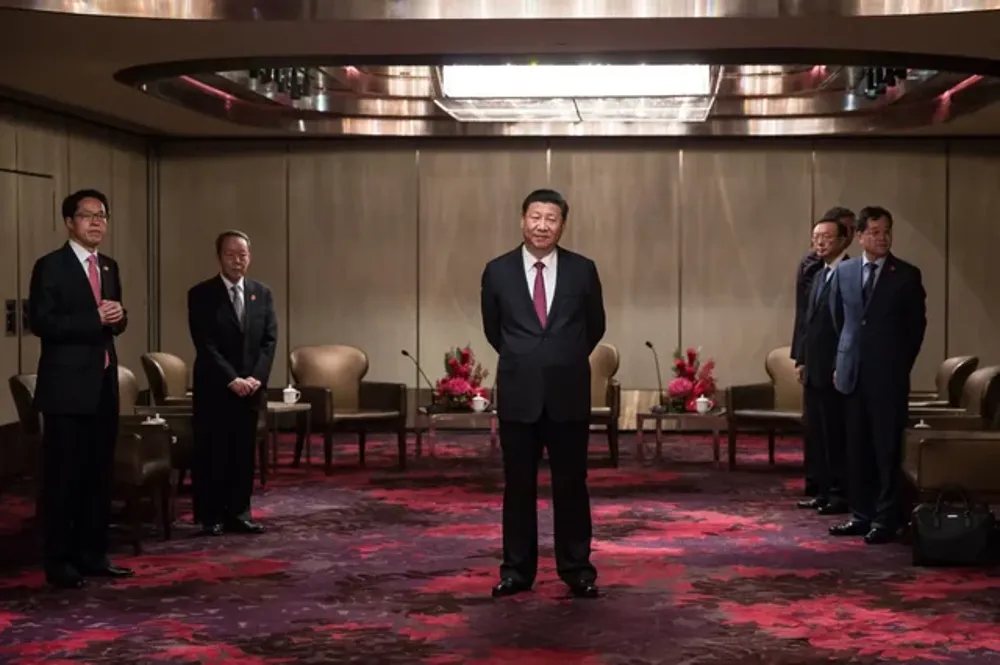

Utrikes

Xi Jinping svarar USA:s tull med aura farming
Kina bröt sent förra veckan den månadslånga tystnaden landet hade haft kring utrikespolitik med en "aura farming" -bild av landets ledare Xi Jinping. Experter var först förvånade över det unika svaret från CCP, men bilden verkar redan ha fått geopolitiska konsekvenser. Efter att Kinas politiska representanter inte infann sig på Shangri-La-dialogen på lördagen i Singapore var Kinas strategi kring tullarna osäkra. Nu efter att bilden släpptes tweetade Pete Hegseth, Trumps säkretsrådgivare, att bilden borde klassas som ett krigsbrott med "mängden aura den genererar". CCP hotade i ett uttalande tidigt på måndagsmorgonen att "Om inte USA sänker sina tullar kommer fler aura-farmande bilder släppas", potentiellt med Xi som mewar.